这军犬的生涯也完了
此刻的王艳兵终于意识到开夏令营比拍戏赚钱多了[流泪][流泪][流泪][流泪][流泪]
其实我不明白一开始为啥选二牛不谈后面的表现
去去晦气
咱妈护体百无禁忌[感谢][感谢][感谢] 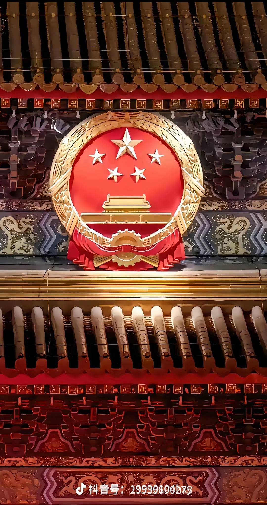
开局就给我听蒙圈啦！猛鬼怀孕了[绝望的凝视][绝望的凝视][绝望的凝视]
元宝这期的灯光好恐怖，把你照的脸色煞白毫无血色，嘴唇紫红，像纸扎人一样，快换个灯光吧 [捂脸]
说不上来，大概就是这种感觉[九转大肠]

节拍打起来[嘿哈]
我……看到的一瞬间都被自己气笑了[憨笑] 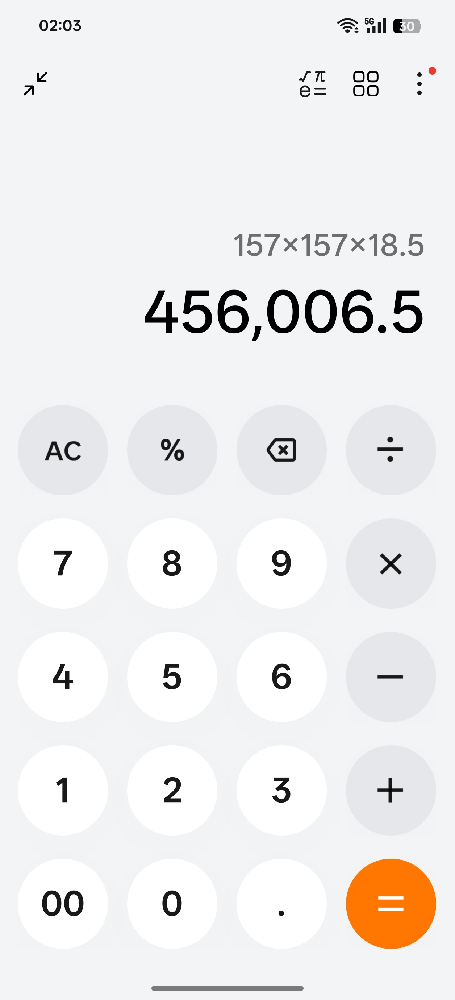
中骨架 1.581.5818.5=46.1834 可是我现在120斤[流泪][流泪][流泪] 这是要我的命啊
我说地生你说
古早cp[憨笑] 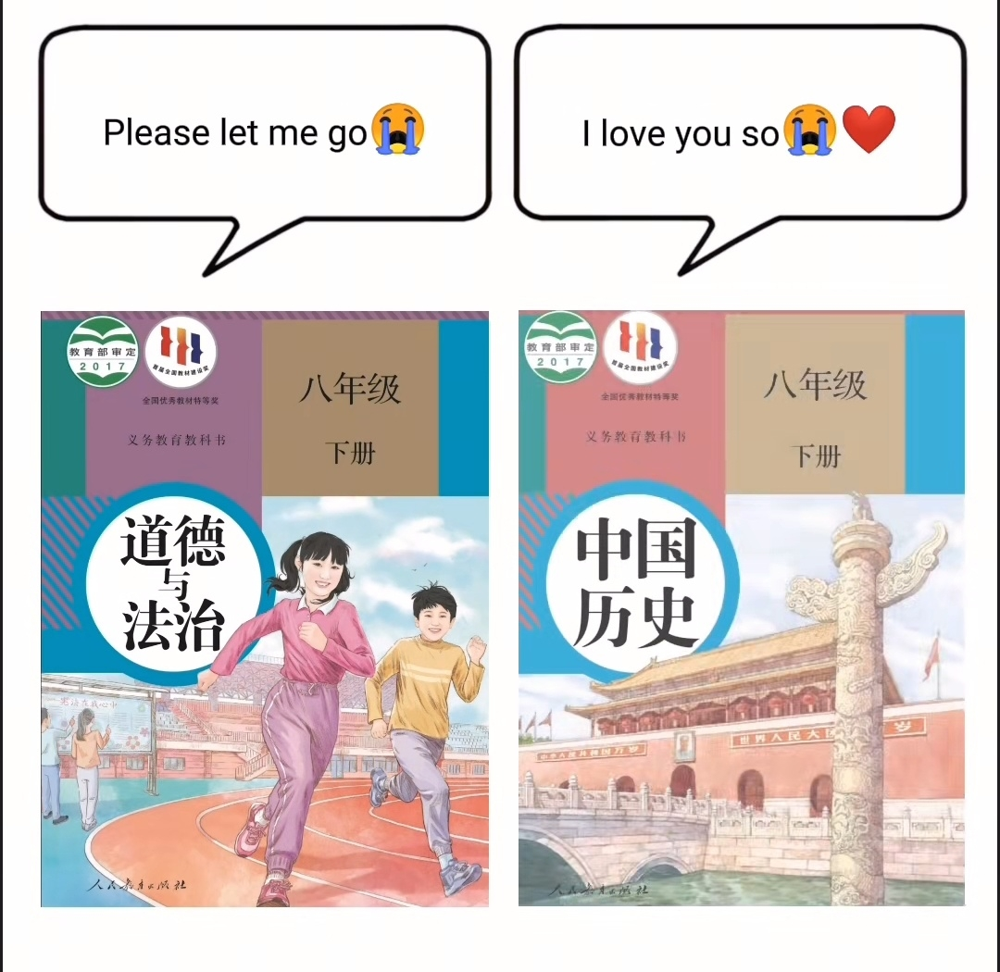
禁止强磕 地生99 政史及99
求双死be教程[憨笑]
神奇！尾部没怎么摆动！却能游这么快！！怎么做到的
海豚会主动靠近行驶中的轮船，借轮船前进破浪形成的“压力波”，仅需微调鱼鳍就能保持高速前进，相当于“冲浪”或者搭顺风车。 而且船只前进会吸引鱼群，玩累了还能就地吃自助餐，智力水平相当高了。
能不神奇吗，你开着船在后边追人家，不快点游，等你碾过去吗[黑脸]
显眼包到哪你都能一目了然的看出来它是显眼包[尬笑]
转圈圈那个小海豚从头到尾都感觉她好快乐
开始跳出水面的最皮，后面转圈圈的也是它[捂脸]
我女儿问我，它们跟着轮船游很远，那它们还能找到回家的路吗，我也突然被问懵了，我就说海洋就是它们的家，它们不像人类需要房子，整个海洋就是它们的家。然后孩子说怪不得电视里宣传不能污染海洋，因为那等于往别人家里丢垃圾
老朱你的衣服用了多少钱做的[看]
见过此物的多大了
小时候我家丢了一只鸡。。。我哭着找了半下午。。。晚上八点多妈妈回来。。。告诉我昨晚吃的就是[衰][衰]
为什么想哭呢，因为看到小时候的自己[流泪]
有的人从小就是操心命，有的人却高枕无忧
小时候我一个人在家，下雨了，我哭着一个人收完了，收完太阳又出来了，我又开始哭着往外搬[流泪][流泪][流泪]
我俊不俊。[看] 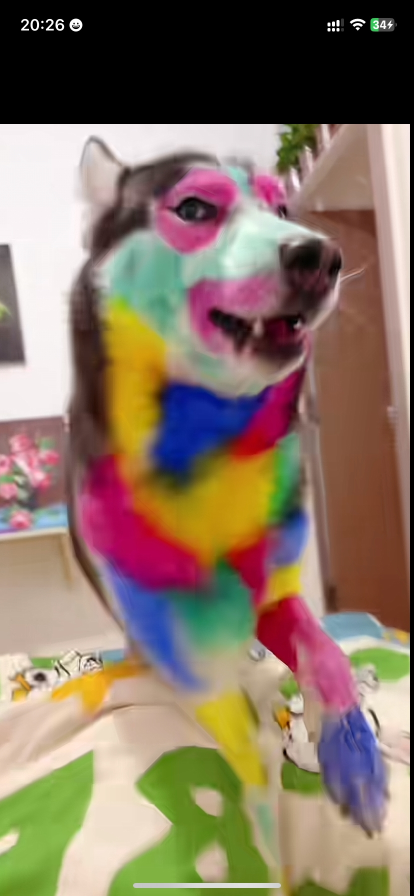
警察:我们有原则[九转大肠]，私人不能持有枪支[九转大肠]，老爷子:小同志，你口里的原则，就是这两把枪打出来的[九转大肠]
说心里话，我碰见这样的店主我不会觉得幽默，我会感觉他精神有点奇怪
小孩回家后：妈妈我今天碰见了一个精神病开的店
修狗劳低：嗯，他不是一般人 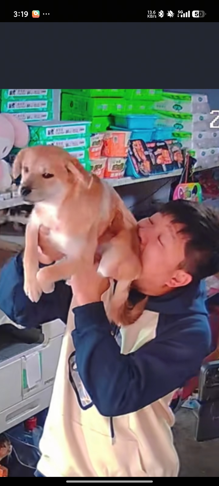
小猫：六百六十六 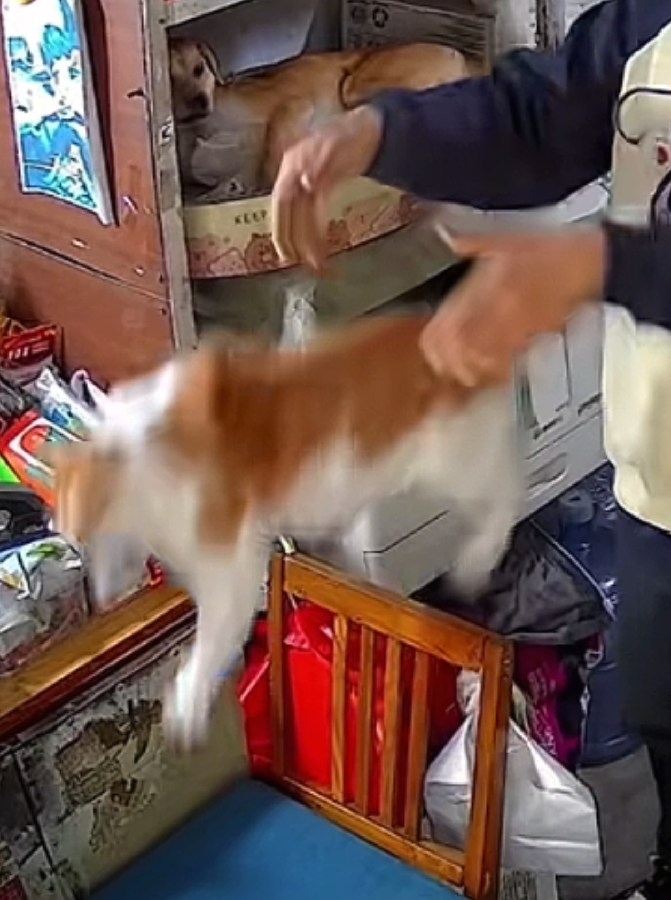
研学带行李箱[憨笑]好小众的词
哟，家里养了订书机啊
Here is johnny~
强尼来了[酷拽][酷拽][酷拽] 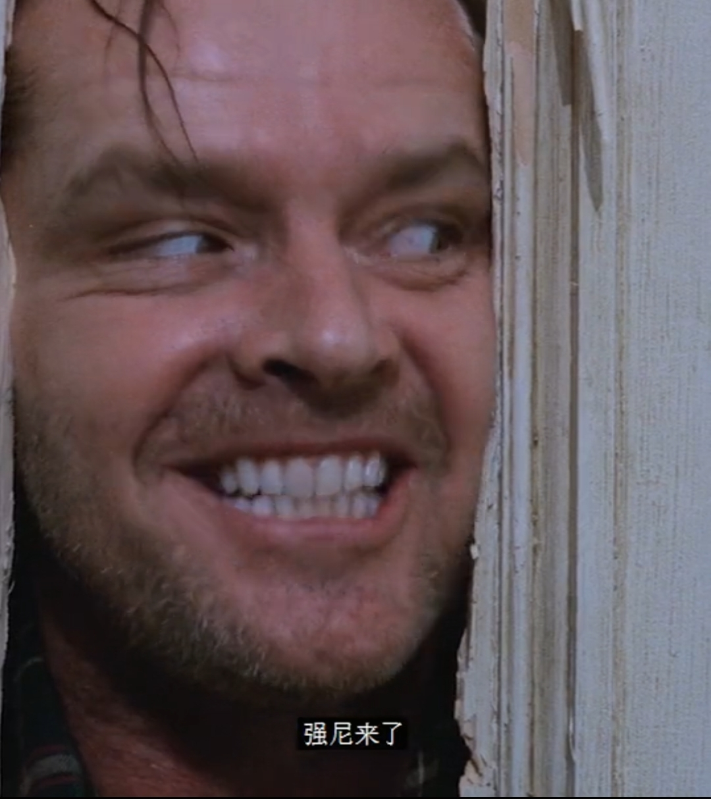
改装后的门，清晨的光影很美丽 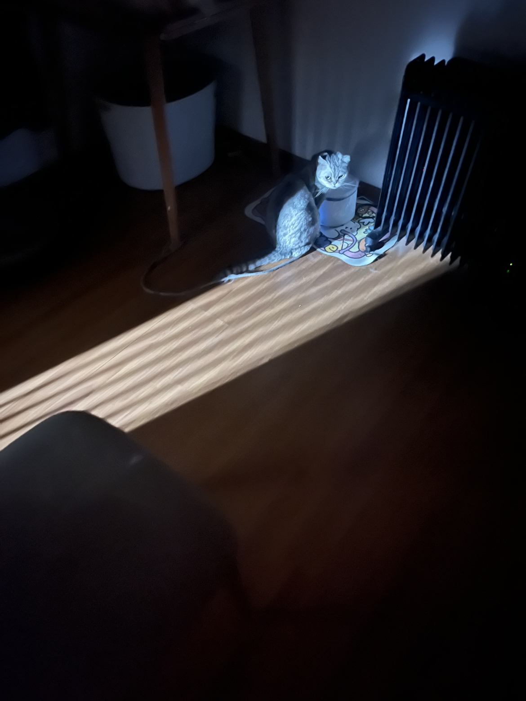
🐶:这门脆脆的[如花]
鉴定完毕，不是实木，都是合成板，持续释放甲醛，毁掉后换实木的，它是为你好
张伟版《闪灵》[白眼]
这位大体老师现在应该在天庭当仙子了吧
王菊真是天选演员，哪个角色都浑然天成，一点不像演的[呲牙]
一声忽爷爷 我破防了[捂脸][捂脸]
万一地震了呢，万一呲杆了呢，万一球桌塌了呢，万一，她回来了呢
penbeat小时候巨迷，天天拿个笔敲，我妈以为我在家做法[黑脸]
现在还能看到penbeat[捂脸]
吃香喝辣这一块[憨笑] 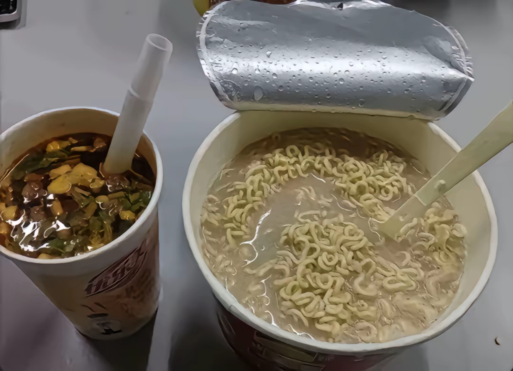
2018年最喜欢听这个病变了
别墅里面唱k 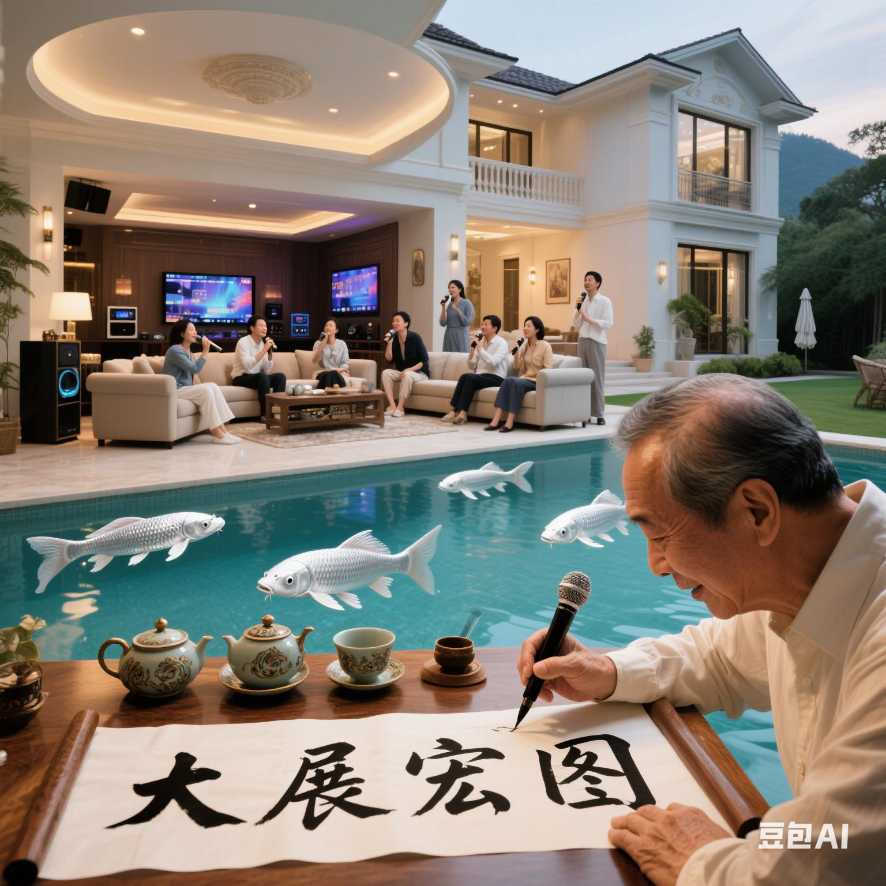
小时候拿笔乱敲以为自己也会[憨笑]
penbeat远古时代产物了，现在还玩的都是大佬
暗区玩家最卑微的一次[捂脸]
这东西我天生就会[憨笑] 拿着笔乱敲，然后靠脑子修音[憨笑] 这我称之为天赋[憨笑]
我滴嘛 震惊了[泣不成声]前面我还在想敲的什么 是不是没掌握住节奏 后面开始直接震惊了佩服
网络真的是换了一批人了，逛了一圈根本没有人认识penbeat[困]
penbeat我天呢，好像回到了小学[晕]
小时候拿笔乱敲以为自己也会[憨笑][憨笑][憨笑]
18年你们不知道吗？[黑脸]美拍[黑脸]samsara什么的
你们在玩梗。但是揽佬真来财了[憨笑]
ber，你们2018年都没刷到过这个吗
即兴无谱啊家人们但如果有人想我扒谱的话或许…[九转大肠]
别墅里面打瓦 宿舍里面叫妈妈[愉快]
2018年美拍记忆痛击了我
揽佬真的是个鬼才，每过一段时间就会出来一首上头的歌
差评没挂玉牌😡
不知道你们知道特污兔吗 他最开始也是玩penbeat的[捂脸][捂脸][捂脸]
可是我觉得这个大展鸿图真心不错 采曲歌词都很有老广的感觉
梅子熟时，乍知春去，始觉情深
最食人间烟火色 看了之后是真的想结婚[笑哭]
魏哲鸣《私藏浪漫》《完美先生和差不多小姐》《贺先生的恋恋不忘》三杀，这个赛道强的可怕[比心][比心][比心][比心]
此为真神[愉快][强壮]
不应该是我们先婚后爱的鼻祖奈何boss要娶我吗[黑脸]
居然还有人记得《从结婚开始恋爱》[舔屏][舔屏]
我对陈鑫海永远有景琛的滤镜[流泪]（这张图片至今都是理想型）
私藏浪漫top1 最食人间烟火色top2 这两部真是太好看了！
居然有人记得我的小遇见[流泪][流泪][流泪]
“女性的价值，从不只限于婚姻和爱情。” ----景琛 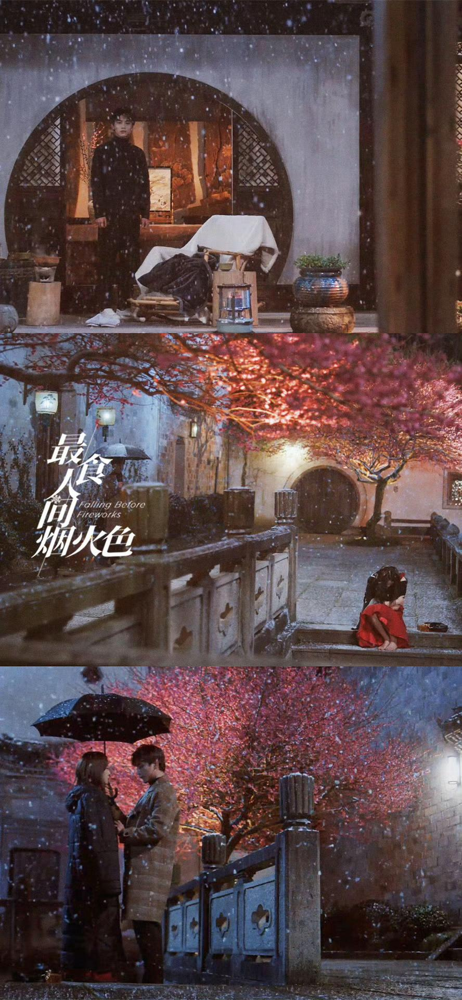
老师！我最食人间烟火色好不容易走出来了[泣不成声]又给我拉回去了
比耳光先来的是颗颗的香气[看]
给你们看个正版的
我在五指山做生意的时候...
Read more: